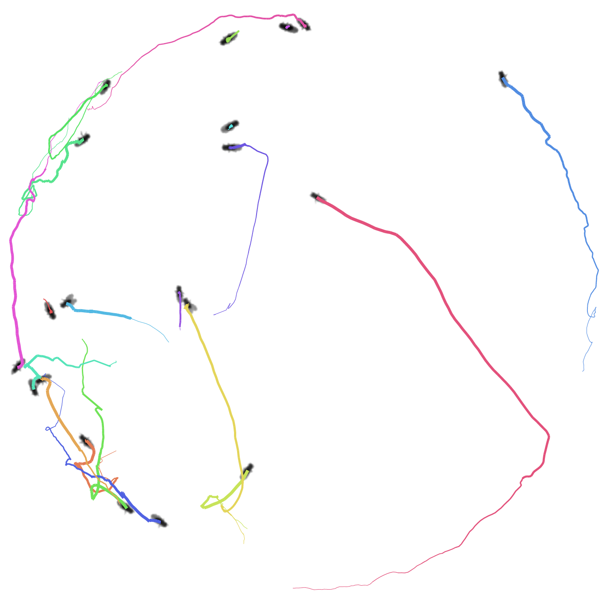
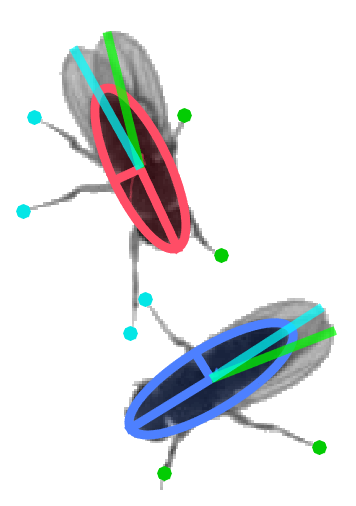

FlyTracker aims to track the pose (position, orientation, size, wing- and leg positions) of multiple flies and maintain their identities throughout a video. In addition to trajectories, it outputs features (such as velocity, facing angle to other fly, and wing angles) useful for behavior analysis.
 Please join our google group to receive announcements and post any questions or concerns!
This documentation is a copy of the original documentation from http://www.vision.caltech.edu/Tools/FlyTracker/